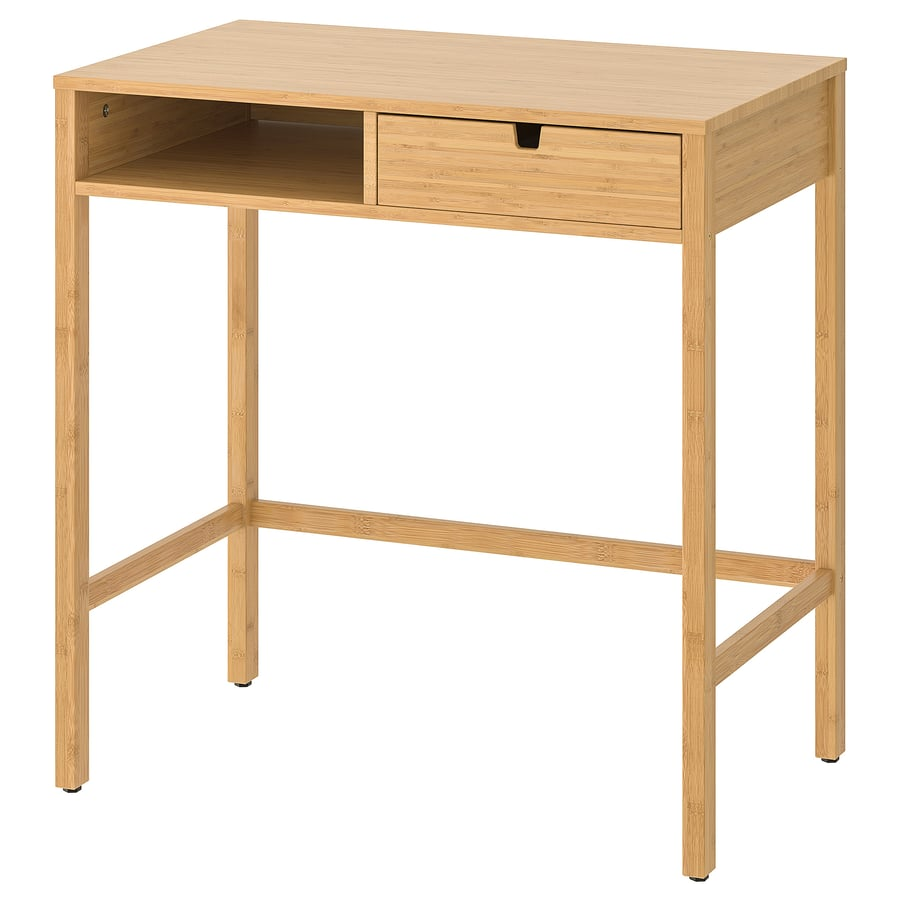

밝은 톤 · 미니멀이 옵션 제품 상세 ↗
IKEA NORDKISA 노르드키사 화장대
대나무 · 76×47cm · 제품 번호 004.394.73
159,000원 상품가 · 거울 별도
배송 미확정
밝고 간결한 형태를 우선하면 먼저 볼 후보예요. 대나무 결과 긴 다리가 가볍게 보이고 서랍은 한 개입니다.
- 크기
- 폭 76 × 깊이 47 × 높이 76cm
- 수납
- 서랍 1개 + 열린 수납칸 1개. 서랍은 앞뒤 양쪽에서 열 수 있습니다. 서랍 도면 치수는 33×45×9cm이며 내부 유효 치수로 확정하지 않았습니다.
- 앉는 공간
- 공식 치수 그림의 상부 수납칸 아래 높이 66cm. 다리 사이 실제 유효 폭은 미표기입니다. 하단 앞쪽은 열려 있고 뒤쪽과 양옆에 가로대가 있습니다.
- 소재
- 상판·선반·다리·레일·서랍 앞판/옆판: 투명 래커 마감 대나무. 서랍 밑판: 섬유판과 라미네이트·도장 마감. 전 부재가 원목인 제품은 아닙니다.
깊이 47cm라 얕은 화장대 대안은 아닙니다. 현재 깊이 39cm 화장대와 같은 벽 기준으로 두면 모델상 침대와의 통로는 약 86.5→78.5cm로 줄어듭니다. 이는 외곽·배치가 같다는 가정의 계산이며 실측 통로가 아닙니다. 앉거나 서랍을 꺼낼 때 필요한 공간은 별도로 확인해야 합니다. 일부 구매 후기에는 흔들림·상판 휨·서랍 과인출이 언급되어 있습니다.
사진·후기·확인 근거
판매자의 해당 옵션 사진입니다. 촬영 소품은 포함되지 않습니다.
IKEA 한국 상품 페이지의 전체 집계. 국가별 후기 포함 범위는 확인하지 않았습니다. 후기 수 자체가 품질 보증을 뜻하지 않습니다.
확인된 후기 28개 · 4.4점
가격 확인일 2026.10.31 · 쿠폰·적립금은 미리 차감하지 않았습니다.